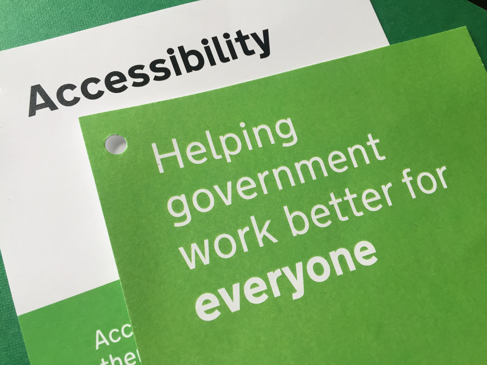
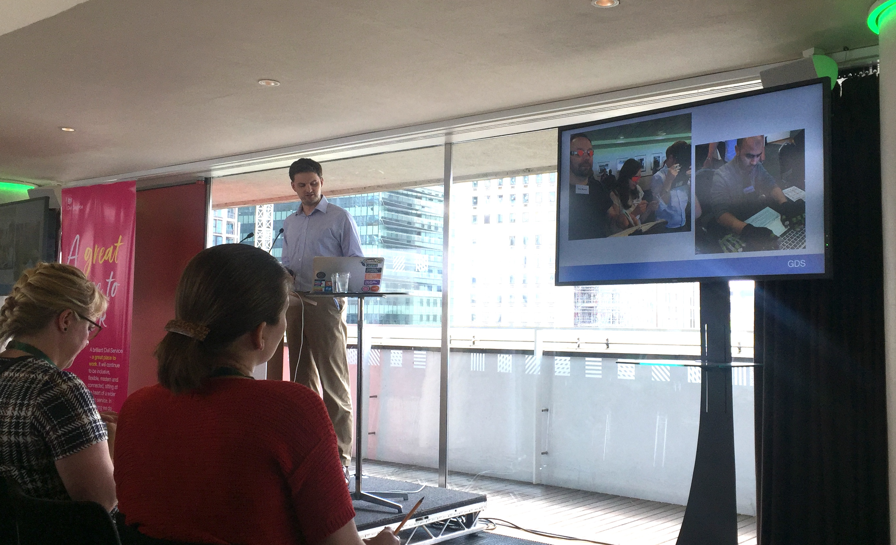
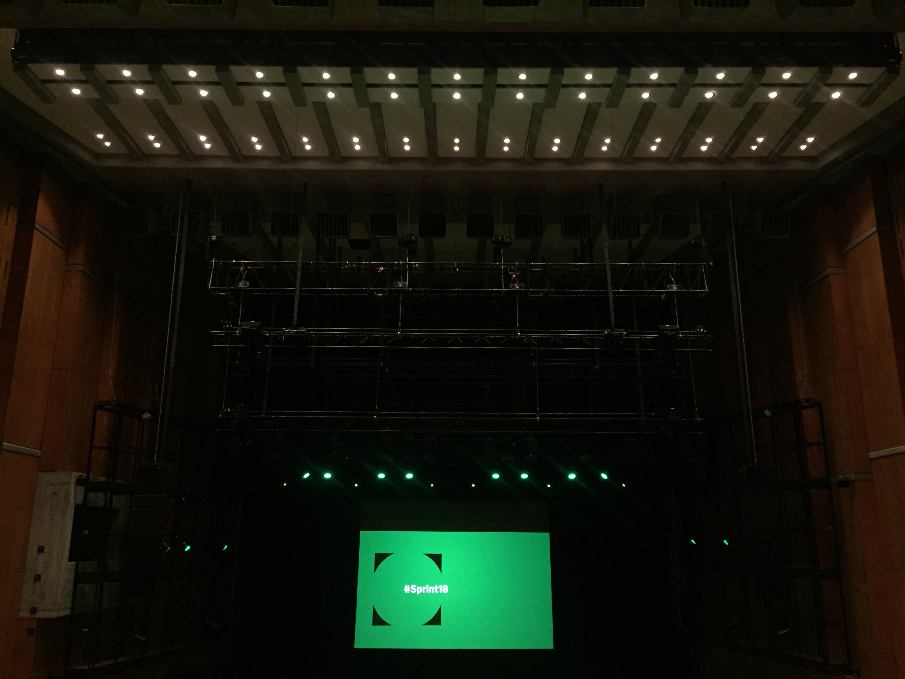

tl;dr
I went to a public-sector accessibility workshop. Designing for accessibility can make products and services better for everyone.
Sprinting
Sprint events are a chance for the government digital, data, design and technology community to:
look back on the work we’ve been doing to transform government and to look forward at what we need to do
Kevin Cunnington, Director General of the Government Digital Service (GDS), outlined this in a recent blog post.
This year’s major themes were transformation, innovation and collaboration. The event was held at the Southbank Centre and Royal Festival Hall in London, with 40 speakers, 19 workshops and over 700 delegates representing 40 departments and agencies.
The event was captured in a live blog and with the Twitter hashtag #Sprint18. A round-up video is also available.
Motivation
The analytical community in my department has been producing a range of self-service tools for colleagues, but we’ve generally got little experience of how to incorporate accessibility into our work. Often we have a small pool of users internally who can tell us their needs directly, but we can’t always know whether our creations will be passed on to users that we aren’t aware of.
I went to the accessibility workshop at Sprint 18 to get an insight into what’s being done across government and what we can learn. This blog post provides a record of the session and will hopefully help to start a conversation.
Presenters
The session was presented by:
What is accessibility?
Alistair opened by explaining that:
accessibility means making sure there are no barriers that might prevent someone from accessing or using something
Users may have needs related to vision, hearing, motor skills and cognitive skills, among many others. It’s important to take these into account to maximise inclusivity.
This is hugely relevant for governments because their users are all of the citizens in the country. That’s a lot of people with a lot of accessibility needs to consider.
We’re all only temporarily not disabled
Designing for accessibility can improve the user experience for everyone.
This is because impairments exist along a scale of permanent to situational. For example, consider the needs of users:
- who are deaf (permanent)
- have an ear infection (situational)
- are in a noisy location (situational)
Designing for the permanently deaf could benefit everyone on the continuum. For example, captions on video content make the content accessible for all of these people.
It’s worth remembering that the prevalence of disability rises with age and we’re all likely to face impairment at some point. Don’t forget that you’re planning and building services for your future self as well.

Achieving digital accessibility
Simply putting something online doesn’t make it accessible by default.
Four things are required to achieve digital accessibility, as outlined in the ‘what we mean when we talk about accessibility’ blog post on GOV.UK. Your content must be:
- perceivable to at least one of the user’s senses (a webpage that can be interpreted by a screen reader, for example)
- understandable so that it makes sense to the user (it’s not enough for it to be perceived, it must also be interpretable)
- operable so users can interact with it (support for keyboard-only input, for example)
- robust so that it works as expected with the technology that users have access to
If any of these are broken, then the thing is probably unusable.
The law
Designing for accessibility goes beyond being helpful. The flyer for the workshop stated:
Considering the needs of a diverse range of people helps us design better services and products. Making services accessible is a also a legal requirement.
The Equality Act 2010 means government must not discriminate against people. In addition, a new EU directive is being brought into UK law later this year that will create new rules for public sector bodies to abide by when presenting content.
This means that government is actually obliged to take steps to reduce barriers and improve inclusivity of its services.
Note that a consultation on the accessibility of public sector websites and apps is currently open for comment until 28 May 2018.
We can improve
Alistair described some discovery work by GDS to investigate how accessibility was being considered across government departments. In general, experience was low and people were unsure what they should be doing.
Help and advice are available. Service designers should:
Culture change
James acknowledged that it’s not just about having the right tools in place. Departments may need to change their ethos to make sure that accessibility is baked into design from day one.
There should be a mentality that’s it’s everyone’s responsibility. Everyone should always ask ‘is this accessible?’ when building something. If not, then why not?
But it’s not just about generating interest. Assigning and meeting goals for accessibility will help to make sure that you’re accountable for improving your services.
A big part of this is getting the support of senior leaders, who can help move things along and help to ensure that emphasis is in the right place.
Posters
One part of culture change is raising awareness. The Home Office have done this by creating a series of posters on the dos and dont’s of designing for accessibility.
These are available for download from GitHub.

Questions and answers
I’ve paraphrased answers to audience questions.
Sometimes accessibility is seen as pass/fail thing. But can you actually make services accessible for everyone?
It’s hard to make things 100 per cent accessible for everyone. You just need to make progress and remove exclusionary barriers. The goal is to stop accidental exclusion.
This is why user research is important; the guidelines might not actually be relevant for your particular users.
Consider the passports pages of GOV.UK: putting the information on a single page made it difficult for people with Attention Deficit Disorder to focus, but spreading it across multiple pages was an issue for people with memory problems. Two versions were required.
Does government have a relationship with producers of assistive technology
There’s not been a relationship historically, but we’re starting to form them with vendors. It would be great for them to help us with issues like browser compatibility and assistive technologies. We also raise bug reports where we can.
What things can we focus on immediately?
Use plain language. The text of hyperlinks must make sense on their own, since a screen reader will read the text to users. It’s not enough to write ‘click here’. Images should have good alt-text so that screen readers can describe an image to visually impaired users. Videos should be captioned.
Follow good practice as usual, but take it to the next level.
Summary
The workshop made me think about what I can do to make sure that the tools I create are accessible to our users. I’ll certainly be reporting back on this workshop to my team and I hope that others find this summary useful. At very worst, here are three things you can do:
- Easy: read the Accessibility blog on GOV.UK.
- Review your practices: consult the Accessibility and assisted digital pages of the Service Manual to help meet the Digital Service Standard.
- Get involved: join the cross-government accessibility community, who share resources and hold meetups.
Finally, Alistair and James finished with three take-away messages:
- Make accessibility everyone’s responsibility and get the support of seniors in your department
- Check your services for accessibility and get plenty of user feedback
- Set targets for fixing the issues and achieving the standards

See you at Sprint 19.
Environment
Session info
Last rendered: 2023-08-09 21:21:31 BST
R version 4.3.1 (2023-06-16)
Platform: aarch64-apple-darwin20 (64-bit)
Running under: macOS Ventura 13.2.1
Matrix products: default
BLAS: /Library/Frameworks/R.framework/Versions/4.3-arm64/Resources/lib/libRblas.0.dylib
LAPACK: /Library/Frameworks/R.framework/Versions/4.3-arm64/Resources/lib/libRlapack.dylib; LAPACK version 3.11.0
locale:
[1] en_US.UTF-8/en_US.UTF-8/en_US.UTF-8/C/en_US.UTF-8/en_US.UTF-8
time zone: Europe/London
tzcode source: internal
attached base packages:
[1] stats graphics grDevices utils datasets methods base
loaded via a namespace (and not attached):
[1] htmlwidgets_1.6.2 compiler_4.3.1 fastmap_1.1.1 cli_3.6.1
[5] tools_4.3.1 htmltools_0.5.5 rstudioapi_0.15.0 yaml_2.3.7
[9] rmarkdown_2.23 knitr_1.43.1 jsonlite_1.8.7 xfun_0.39
[13] digest_0.6.33 rlang_1.1.1 evaluate_0.21